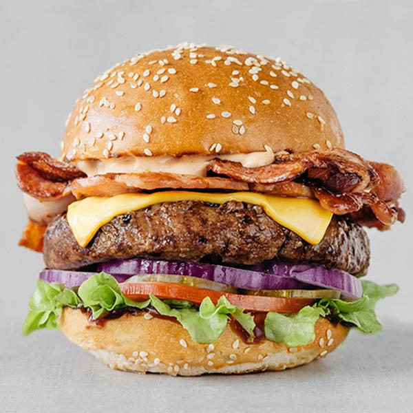

Beef Burger

Description
Indulge in the exquisite flavors of this mouthwatering Beef Burger, crafted with layers of succulent beef patties,
a symphony of sautéed onions, and a perfect blend of herbs, all nestled between toasted white rolls with crisp lettuce and
juicy tomato slices. Optional mature Cheddar adds a delightful richness, creating a burger experience that's truly unforgettable.
Ingredients
- Olive oil
- 1 onion, peeled and finely chopped
- Beef Steak
- 1 tsp mixed dried herbs
- 1 egg, beaten
- 4 slices mature Cheddar (optional)
- 4 white rolls
- few round lettuce leaves, torn 1 beef tomato, sliced
- ketchup, to serve (optional)
Steps
- Heat the olive oil in a frying pan, add the onion and cook for 5 minutes until softened and starting to turn golden. Set aside.
- In a bowl,combine the beef mince with the herbs and the egg.Season,add the onions and mix well.Using your hands, shape into 4 patties.
- Cook the burgers on a preheated barbecue or griddle for5-6 minutes on each side.While the second side is cooking,lay a slice of cheese on top to melt slightly (if using).
- Meanwhile, lightly toast the cut-sides of the buns on the barbecue. Fill with the lettuce, burgers and tomato slices. Serve with ketchup, if you like.